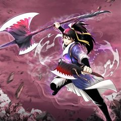
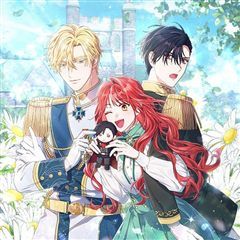
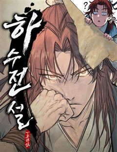
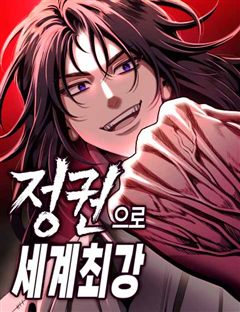
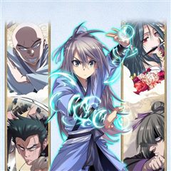
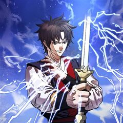
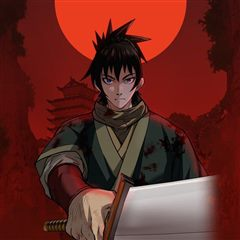

무협 웃긴·병맛 웹툰 추천 TOP 30
무협 작품 중에서 개그, 판타지개그, 4차원, 가벼운 같은 요소가 들어간 작품만 골랐어요. 네이버웹툰·카카오웹툰·레진코믹스에서 조건에 맞는 작품 35개 중 인기 순으로 30개를 골랐어요. 인기 TOP 3: 화산귀환, 비뢰도, 로그인 무림
2026-09-30 기준 · 성인 작품 제외
내 취향으로 더 좁혀서 추천받기 →-
1
 네이버웹툰
네이버웹툰화산귀환
대 화산파 13대 제자.천하삼대검수 매화검존 청명. 천하를 혼란에 빠뜨린 고금제일마 천마의 목을 치고 십만대산의 정상에서 영면. 백 년의 시간을 뛰어넘어 아이의 몸으로 다시 살아나다. ......뭐? 화산이 망해? 이게 뭔 개소리야!?
무협개그명작세계관동양풍판타지네이버웹툰에서 보기 → -
2
 카카오웹툰
카카오웹툰비뢰도
홀로 길러주신 아버지를 잃고 10세에 혈혈단신이 된 비류연. 조각가였던 아버지에게 배운 기술로 부모님의 조각상을 만들어 두 분 묘 앞에 세워뒀더니, 지나가던 노인이 그걸 보고는 천하제일 무공을 가르쳐주겠다고 한다. 수상쩍지만 달리 갈 곳도 없고, 그럴듯해 보인 무공에 혹해 비류연은 그…
무협개그사이다액션캠퍼스카카오웹툰에서 보기 → -
3
 카카오웹툰
카카오웹툰로그인 무림
세상의 경계인 게이트에서 몬스터 사냥을 하는 헌터들이 잘 먹고 잘 사는 시대. 주인공 진태경은 최하위 헌터라 벌이가 시원찮다. 어느 날, 낡은 VR 게임기를 줍게 되고 접속하니 무림의 세계가 펼쳐진다. 우여곡절 끝에 현실로 돌아온 태경은 무림에서 얻었던 힘이 현실에서도 그대로 남아있음…
무협개그서스펜스액션게임판타지카카오웹툰에서 보기 → -
4
 카카오웹툰
카카오웹툰신마의선
정파의 신의, 사파의 마의. 전설적인 두 의원이 혼인을 했다? 아빠는 신의, 엄마는 마의. 부모님의 의술을 물려받은 단악선 앞에 나타난 절대 고수. 그 운명적인 만남은 어린 단악선을 강호로 이끄는데...
무협개그액션성장물카카오웹툰에서 보기 → -
5
 카카오웹툰
카카오웹툰마존현세강림기
첫 번째 삶. 불의의 사고로 가족과 두 다리를 잃고 스스로 목숨을 끊었다. 두 번째 삶. 중원에서 적천마존이라는 명성을 얻었지만 가장 신뢰하던 이에게 배신당해 죽게 됐다. 그리고 맞게 된 세 번째 삶. 다시 돌아온 현대에서 강진호 자신은 평범한 삶을 살 거라 다짐하지만... 평범한 인…
무협개그사이다학원물회귀카카오웹툰에서 보기 → -
6
 카카오웹툰
카카오웹툰일보신권
부유한 상방의 아들로 태어났지만, 집안을 말아먹을 팔자였던 ‘장건’. 팔자를 고치기 위해선 덕이 높은 고승과 지내며 검소한 생활을 익혀야 한단다. 그렇게 소림사의 짠돌이 ‘굉목’에게 맡겨진 장건은 꺼끌꺼끌한 무명 승복에 생쌀로 끼니를 때우는 고단한 나날을 보내게 되고... 배고픔을 견…
무협개그액션성장물카카오웹툰에서 보기 → -
7

카카오웹툰마인화산
무림공적, 천살마군 염세악! 검신 한호에게 잡혀 화산에 갇힌 지 백년. 와신상담… 절치부심… 복수무한… 세월은 이 모든 것을 잊게 하고 세상마저 그를 잊게 만들었다. 하지만. “허면 어르신 함자가 어찌 되시는지…….” 우연한 만남, 자신도 모르게 튀어나온 원수의 이름. “그게… 한,…
무협개그액션카카오웹툰에서 보기 → -
8
 카카오웹툰
카카오웹툰천하제일 의뢰문
“드디어 자유다!” 십오 년만의 하산, 지난 세월 동안 헛되이 보낸 청춘을 보상 받기 위해 세상에 나섰다. 하산하며 사부와 약속했던 십행을 하루 빨리 해결한 뒤 한평생 즐기면서 살아가기로 마음 먹고 자신만만하게 첫발을 내디뎠지만 어째 처음 예상과는 달리 일은 점점 꼬여만 가는데…. 도…
무협개그사이다액션성장물카카오웹툰에서 보기 → -
9
 네이버웹툰
네이버웹툰사상최강
‘천하 십대 고수’라고 불리는 자들. 인간의 한계를 뛰어넘은 그들은 서로를 견제하며 힘의 균형과 세상의 질서를 유지해왔다. 바로 ‘백도현’ 그가 나타나기 전까지는! 내공만으로 사상최강의 힘을 가진 남자 백도현의 시원한 한 방!
무협개그가벼운사이다정통무협네이버웹툰에서 보기 → -
10
 카카오웹툰
카카오웹툰천검기협
무림의 환란을 막기 위해 초절정고수에서 초고도비만으로 타임슬립+빙의한 개망나니 진위강, 아니 유현. 환란의 원흉인 '환란의 주구'를 찾아내 숨통을 끊어 놓아야 하거늘 사랑 듬뿍 받고 자라 걷지도 못할 만큼 육중해진 몸에 빙의한 덕에 제 숨통 유지가 만만치 않은 지경이다. 더 큰 문제는…
무협개그사이다액션빙의카카오웹툰에서 보기 → -
11

카카오웹툰결혼도 안 했는데 무슨 이혼인가요, 폐하
대륙의 절반이 들끓었던 영토 전쟁이 끝난 후로 십 년. 종전의 영웅, 아이작 메저린의 영지에 순금을 녹인 인장이 박힌 문서가 날아들었다. 아직 결혼도 안 한 외동딸 클리샤 메저린에게 보내온, 황제의 <이혼서>. 느닷없는 이혼으로도 미치고 팔짝 뛸 노릇인데, 황실 규범에 따라 10년간…
무협개그로판로맨틱코미디카카오웹툰에서 보기 → -
12
 카카오웹툰
카카오웹툰창천무신
"이 기생오라비처럼 생긴 놈은 뭐지?" 천하제일로 군림하던 최강의 무인! 나, 독패 하후영. 나를 상대할 자는 무림 어디에도 존재하지 않는다! 더는 지상에서 이룰 성취가 없자 허무와 공허가 나를 잠식했다. 무의 끝, 극의를 이루기 위해서는 신선이 될 수밖에! "마침내 성공했다아아아!!…
무협개그사이다액션환생카카오웹툰에서 보기 → -
13
 네이버웹툰
네이버웹툰천재 무림 트레이너
대 역병 시대, 운영하던 헬스장이 망했다. 어떻게든 먹고 살아보려던 찰나 읽고 있던 무협지에 빙의했다. 도착해보니 천년 소림이라 좋아했는데, 이건 뭐? 다들 잘못된 지식과 운동법으로 몸이 다 망가져 있잖아?! 헬스 트레이너였던 내가 이걸 어떻게 참아! 현대의 지식과 운동법으로 사형들을…
무협가벼운동양무협/사극고인물네이버웹툰에서 보기 → -
14
 네이버웹툰
네이버웹툰짜장 한 그릇에 제갈세가 데릴사위
짜장면 한 그릇으로 전 무림을 평정할 수 있을 것 같다? 최고의 중식 요리사를 꿈꿨지만 중국 송나라 시대로 보내져버린 주인공! 하지만 깨어난 몸에 무공은 전혀 없고, 남은 거라곤 전생에서 익힌 요리 기술들뿐. 그런데 이 요리들... 반응이 매우 좋다! 이번 생에는 과연 짜장면으로 중원…
무협개그가벼운병맛하렘네이버웹툰에서 보기 → -
15
 카카오웹툰
카카오웹툰검은머리 미군 대원수
1910년대로 회귀한 인생 2회차 김유진, 미래 지식으로 역사를 휘어잡다. 언덕을 굴러 내려오는 레토나로부터 아이를 구하려다 죽음을 맞이한 한국인 중대장. 정신을 차려 보니 미래 지식을 가진 채 1900년대 재미 조선인 김유진으로 회귀하고 말았다. 미래를 아는 자, 재벌이 될 것인가,…
무협개그사이다액션환생카카오웹툰에서 보기 → -
16
 네이버웹툰
네이버웹툰반로환동한 천마의 마경방송
천상천하 유아독존! 강호제일인 천마 '치유랑'은 정체불명의 힘에 의해 미지의 섬 '마경'에 갇히게 된다. 10년간 고독하게 살고 있던 와중 신비로운 기기를 통해 네 개의 세계가 합쳐진 것을 알게 되고, 세상과의 소통과 생존을 위해 반로환동을 결심하게 되는데... “천마냥이~ 고맙다냥!…
무협판타지개그천마액션판타지생존네이버웹툰에서 보기 → -
17

네이버웹툰하수전설
천하제일고수? 아니다. 명문정파의 대협? 아니다. 무림의 흔하고 소심한 하수 어자서. 우연과 오해, 그리고 기연이 겹쳐 무림의 신비고수로 거듭나는데. 하수의 마음을 지닌 고수 어자서의 무림생존기.
무협가벼운액션무협/사극성장물네이버웹툰에서 보기 → -
18카카오웹툰
천마 객잔
어느 날, 무림에 떨어진 이방인 주강현. 천신만고 끝에 천마에 자리에 오른다. 하지만 그는 늘 자신의 고향인 21c 대한민국을 그리워했다. 진법이 발동되고 고향으로 돌아갈 줄 알았는데 오히려 과거로 회 귀를 해버렸다. 이런 ㅆ... 영래 객잔. 무림에 처음 떨어졌을 때 자신을 돌봐줬던…
무협개그사이다액션회귀카카오웹툰에서 보기 → -
19카카오웹툰
섹시한 폐하와 함께하는 전원생활
왕세자한테 불명예 파혼을 당한 후, 공작가에서 쫓겨난 ‘리에나 폰드’. 하지만 사람이 죽으라는 법은 없는 법! 농대생이었던 전생 덕분에 농사꾼으로서 만족도 100%의 행복한 인생 2막을 살던 중, 수다쟁이 마법 '호미(?)'한테 간택 당하고 만다. “이 몸의 이름은 루이 가르봉 봉튀아…
무협개그로판로맨틱코미디카카오웹툰에서 보기 → -
20

네이버웹툰정권으로 세계최강
아버지의 복수를 위해 10년간 폐관 수련에 들어간 진권. 마침내 하산한 그를 기다리고 있던 건, 원수보다도 낯선 세상이었다. 무림은 사라지고, 세상은 스킬이 지배하는 판타지 시대로 변해 있었다. 주먹과 도복밖에 남지 않은 진권. 하지만 시대가 바뀌었다고 해서 강함의 본질까지 바뀌지는…
무협개그사이다액션판타지네이버웹툰에서 보기 → -
21

카카오웹툰악인들의 대사형
무림제일 공포의 악당 네 명을 세인들은 '혈풍사자'라 불렀다. 그런데 갑자기 그들에게 사형(師兄)이 생겼다는데? 도저히 갱생하지 못할 악인들의 대사형은 8살 꼬마 검우빈! 반박불가 훈남 매력으로 무림을 평정하는 우빈 사형과 좌충우돌 사제들이 펼치는 유쾌한 무림 이야기!!
무협개그사이다액션힐링카카오웹툰에서 보기 → -
22카카오웹툰
흑막은 매일 밤 나를 찾아온다
수도 엘바크에는 한옥풍으로 건축된 13층짜리 호텔이 있다. 나는 호텔 미드나잇 블루의 마스터 루비. ……그리고 흑막공에게 살해당하는 여관 주인1. ‘그게 나일지도 몰라!’ 이곳은 <기어라, 그리고 내 열망을 삼켜라>, 그런 제목을 가진 BL 웹소설의 세계. “죽을 수 없어. 벽에 똥칠…
무협개그로판시대물카카오웹툰에서 보기 → -
23
 네이버웹툰
네이버웹툰억만무림
6600만 년 전, 무공을 쓰는 공룡들이 살아가는 무림. 천마의 난 이후 혼란이 이어지는 가운데, 스승을 잃은 트리케라톱스 소년 벽뢰아는 숨겨진 무공과 천마의 진실을 찾기 위해 모험에 나선다. 거대한 음모와 대재앙의 비밀에 맞서며, 그는 공룡 무림의 마지막 희망이 된다.
무협개그열혈과거시대물네이버웹툰에서 보기 → -
24카카오웹툰
조선야설
"너만 미친개냐, 나도 필동 책 골목의 무심이야!"_조선 최고 야설작가 '무심' "그렇게 원한다면 살아남은 자가 왕이 되어야지."_비운의 대군 '명' *** "뭐, 기대하시오. 이 거봉대사 무심이, 인생 대작 나올 듯 싶으이." 경덕 책방의 홍일점 '무심' 그런 그녀에게는 또 다른 직…
무협개그눈물샘자극성장물카카오웹툰에서 보기 → -
25카카오웹툰
무림 속 공무원으로 살아가는 법
무협지 배경의 추리 게임 <대환국의 명포쾌>의 고인물 연우혁 어느 날 전조도 없이 게임 속의 포쾌로 빙의하게 된다. 다행히 외우고 있던 게임 내 사건이 그대로 나온다는 것을 깨닫고 사건을 해결하면서 게임 속 포쾌로 적응을 시작하는데 기쁨도 잠시 연우혁의 능력인 '영안'이 사실 상단전이…
무협개그서스펜스액션범죄카카오웹툰에서 보기 → -
26카카오웹툰
애 딸린 하녀
떡두꺼비보다는 예쁜 남편과, 청개구리보다는 착한 아이를 낳아 알콩달콩 행복하게 사는 게 인생 최대의 목표인 하녀 아들렌. 난생 처음 뵙는 주인님께서 전쟁터에서 돌아오신 날, 전리품 대신 아기를 던지셨다!! "키워." "네?" "월급 두 배, 집, 마차, 가축, 결혼 자금까지 다 주마.…
무협개그로판육아물카카오웹툰에서 보기 → -
27카카오웹툰
검은 여우 독심호리:곤륜검선 백병지주
[진짜 도사의 무림 퇴마록!] 세상에 요괴를 풀어 세상을 혼란스럽게 하려는 수상한 집단. 그들을 막기 위해 뒤를 쫓던 사부는 실종되고 말았다. 그로부터 10년 뒤. 홀로 도술을 수련하던 "당찬"은 험악한 사내들에게 쫓기는 "진서랑"을 만나게 되고, 호기심을 느껴 진서랑을 구한다. 사내…
무협개그사이다액션모험카카오웹툰에서 보기 → -
28카카오웹툰
천마는 아이돌이 되었다
어느 날 무협 아이돌 그룹 ‘구파일방’ 매니저 점소의 앞에 무협 복식을 입은 미남자가 나타났다. 자신이 ‘천마 위화진’이라고 소개한 남자는 점소의에게 다짜고짜 아이돌을 하겠다고 선언한다. 점소의는 ‘구파일방’의 기획사 키치(K-tsch)의 대표 사이비에게 이 문제를 떠넘기지만, 수상할…
무협개그차원이동카카오웹툰에서 보기 → -
29

카카오웹툰창천무신2
"이 기생오라비처럼 생긴 놈은 뭐지?" 천하제일로 군림하던 최강의 무인! 나, 독패 하후영. 나를 상대할 자는 무림 어디에도 존재하지 않는다! 더는 지상에서 이룰 성취가 없자 허무와 공허가 나를 잠식했다. 무의 끝, 극의를 이루기 위해서는 신선이 될 수밖에! "마침내 성공했다아아아!!…
무협개그사이다액션환생카카오웹툰에서 보기 → -
30

카카오웹툰전생마인
천마신교의 소교주를 지키기 위해 한계를 벗어난 수련은 거친 천마신교의 그림자. 그 공포스러운 그림자들 중 역사 상 최초로 극마의 고수가 등장했다. 소교주를 지키기 위해 강해지라 했다. 그것이 소교주를 지키는, 그림자의 숙명이라고 그렇게 한 평생을 그것을 위해 살았다. 내가 죽던 그 날…
무협개그액션복수극카카오웹툰에서 보기 →